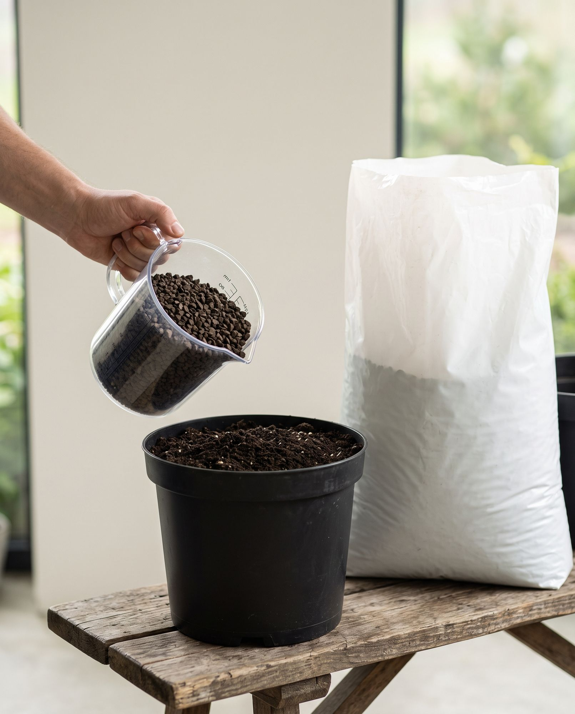

Kupujesz w większych ilościach albo potrzebujesz stałych dostaw? Zapytaj o ofertę
Lista produktów
Filtry produktów
Filtry
zł
Ceny brutto poglądowe: od 20 zł za butelkę 1 l do 9200 zł za mauzer 1000 l. Filtr działa na najniższej cenie produktu, a przy promocji – na cenie po obniżce.
Podział 1:1 z kategoriami obecnego sklepu: produkty doglebowe, dolistne, zestawy.
Produkty CarboHort stoją na liście przed partnerskimi niezależnie od wybranego sortowania.
⚠️ Bez „trawnika" – klient 21.07 („trawniki odpadają") wobec decyzji D35, która go eksponuje.
To jedyna realna informacja, jaką daje pytanie „jakim sprzętem dysponujesz" – reszta wynika z zastosowania.
„Promocja” – produkty z obniżką na co najmniej jedno opakowanie. ⚠️ „Nowość” to kategoria z obecnego sklepu – czeka na pole daty wprowadzenia.
Uprawy kwasolubne
Borówka, różaneczniki, azalie i wrzosy potrzebują niskiego odczynu
promocja
−9%
CARBOMAT ECO pH 6,0–6,5, worek 20 l: 39 zł zamiast 43 zł
Najniższa cena z 30 dni przed obniżką: 43 zł
Podajesz przez opryskiwacz albo linię kroplującą?
Pokażemy tylko to, co przejdzie przez filtry i dysze.
Ściółka zamiast kory
Warstwa 3–5 cm rozsypana bez mieszania. W przeciwieństwie do kory nie powoduje głodu azotowego.
Żaden produkt nie spełnia tych warunków.
Poza wynikami: 0 – zobacz dlaczego
Wszystko, czym poprawisz swoją glebę
Produkty z polskiego lignitu – od worka na działkę po big bagi i mauzery na pole. Worki i big bagi kupujesz od razu, z ceną widoczną na karcie. Przy większych ilościach, regularnych dostawach i produktach bez cennika przygotujemy ofertę i Twoją cenę.
- Polski, rodzinny producent
- Certyfikaty ekologiczne – zakres per produkt
- Badania akredytowanego laboratorium
Prowadzisz uprawę profesjonalną – sad, plantację, pole lub szkółkę?
Przy większych ilościach i stałych dostawach przygotujemy ofertę. Klienci profesjonalni zamawiają na naszej platformie – po swojej cenie.
Nie wiesz, jaki produkt wybrać?
Zapytaj asystenta – zna cały asortyment i wskaże produkt oraz opakowanie. Albo odpowiedz na kilka pytań o uprawę, a konfigurator dobierze produkty i policzy opakowania.
